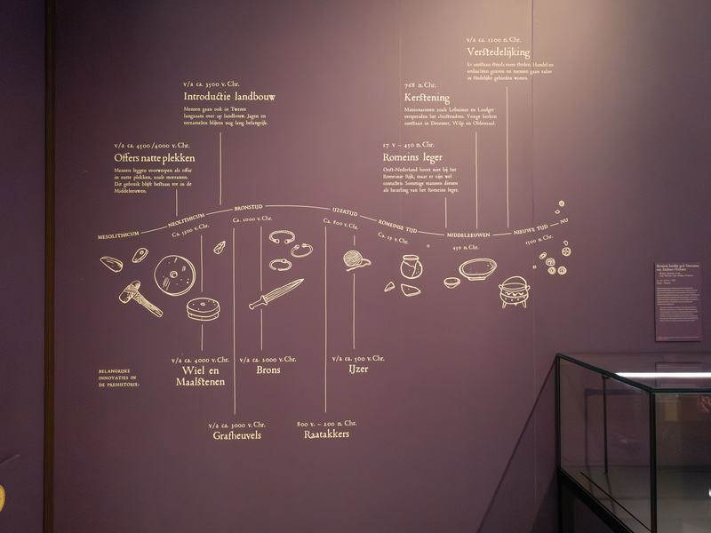
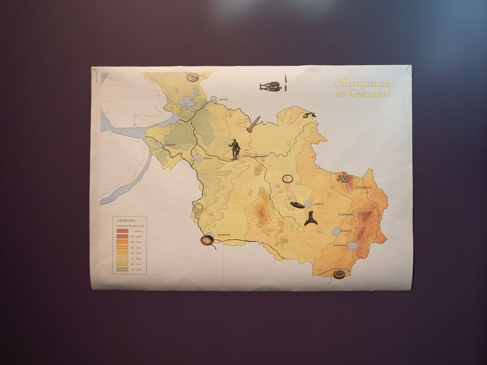
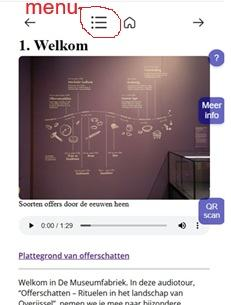

1. Welkom


Welkom in De Museumfabriek. In deze audiotour, “Offerschatten – Rituelen in het landschap van Overijssel”, nemen we je mee naar bijzondere plekken waar archeologen sporen van offers hebben gevonden.
Al vanaf ongeveer 4000 voor Christus brachten mensen offers, vaak op natte plekken zoals moerassen, vennen en rivieren. Dit gebruik bleef duizenden jaren bestaan, zelfs nog toen het christendom in deze streek kwam, rond 768 na Christus.
Vroeger leefden mensen dicht bij de natuur. Het landschap van Overijssel was moeilijk bewoonbaar, met moerassen en mysterieuze nevels. Zulke plekken werden vaak als bijzonder gezien. Men dacht dat hier de wereld van mensen en die van goden of voorouders dicht bij elkaar lag.
Als mensen iets wilden vragen of ergens voor wilden bedanken, kozen ze een waardevol voorwerp. Dat kon een bijl zijn, een sieraad, een wapen, of soms mogelijk zelfs een mens.
Veen en moeras waren daarvoor heel geschikt. In het natte, zure milieu blijven veel materialen goed bewaard, zoals hout, leer en zelfs huid en haar.
Zo bewaren deze plekken verhalen van duizenden jaren oud.
Je gebruikt voor de hele tour maar één QR-code. Die heb je al gescand. Je kunt de tour volgen door telkens naar het volgende luisterpunt te gaan (pijltje rechts boven in je beeldscherm). En op de plattegrond kun je zien waar dat is. Door op de menu-knop te drukken ga je terug naar de lijst met luisterpunten van deze audiotour. De tour duurt ca. 20 minuten.

Soms is het mogelijk om nog wat meer informatie over een onderwerp te krijgen of zijn ter verduidelijking korte video’s toegevoegd. Als je dat wilt, kun je op de knop “Meer info” drukken die dan rechts in het midden van je beeldscherm verschijnt. De tour wordt doordoor uiteraard wat langer.
Je kun ook een eigen volgorde (en lengte) kiezen door op de plattegrond de objecten te kiezen waar je het meeste in geïnteresseerd bent.
Je kunt de tekst luisteren (liefst met oortjes), maar ook gewoon op je beeldscherm lezen.
Veel plezier